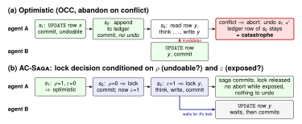
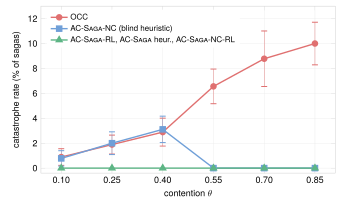

Recoverability-Conditioned Concurrency Control
A transactional layer for agents that share state
Arizona State University

The problem
Agents read, think for seconds, then write. If one is rolled back after appending to a ledger, the rollback undoes what it can and leaves the rest. The agent reports success; the data is wrong. We call this a catastrophe.
Locking everything (2PL) stalls every other agent while one thinks. Running optimistically (OCC) risks the catastrophe. Learned concurrency control ignores recovery; compensation frameworks ignore concurrency.

The idea
Before each operation, AC-Saga asks how recoverable it would be, not only how contended it is.
- LOCKif the operation can't be undone, or the saga is already exposed. This gate is enforced, not learned.
- LEARNotherwise, a small Q-learned policy picks optimistic or locked from contention.
- UNDOon abort, replay logged inverses derived from each statement and its pre-image. If another agent changed the row since, refuse rather than overwrite.
Result: no abort can happen while a saga is exposed (for conflict-induced aborts, with each lock acquired within its retry budget), so every abort that does happen is cleanly recoverable.
Results
Real PostgreSQL · 6 agents · 4-step sagas · 30% irreversible steps · 10 seeds, 95% CI.

| End to end | Correct final state | Recovery tokens | Recovery time |
|---|---|---|---|
| OCC + deterministic undo | 79.7% | 0 | ~0 ms |
| OCC + LLM-written undo | 98.4% | ~120 | ~1.4 s |
| AC-Saga | 100% | 0 | ~0 ms |
Even when handed the exact pre-image, LLM-written compensation gets 86–100% of 4-step sagas right across four open models, and fails silently on the rest.
Honest notes
- No throughput or token win when locks are cheap: the benefit is recoverability, not speed. Tail latency rises 27% at high contention.
- Evaluated on a single-node YCSB-style microbenchmark with single-row operations.
- When compensation refuses to protect another agent's write, the saga is left partially applied.
Cite
@inproceedings{jadhav2026acsaga,
title = {Recoverability-Conditioned Concurrency Control:
A Transactional Layer for Agents That Share State},
author = {Jadhav, Kunal and More, Siddhesh},
booktitle = {NeurIPS 2026 Workshop on Co-designing Systems and ML
Foundations of an OS Layer for Agentic AI (AgenticOS)},
year = {2026}
}